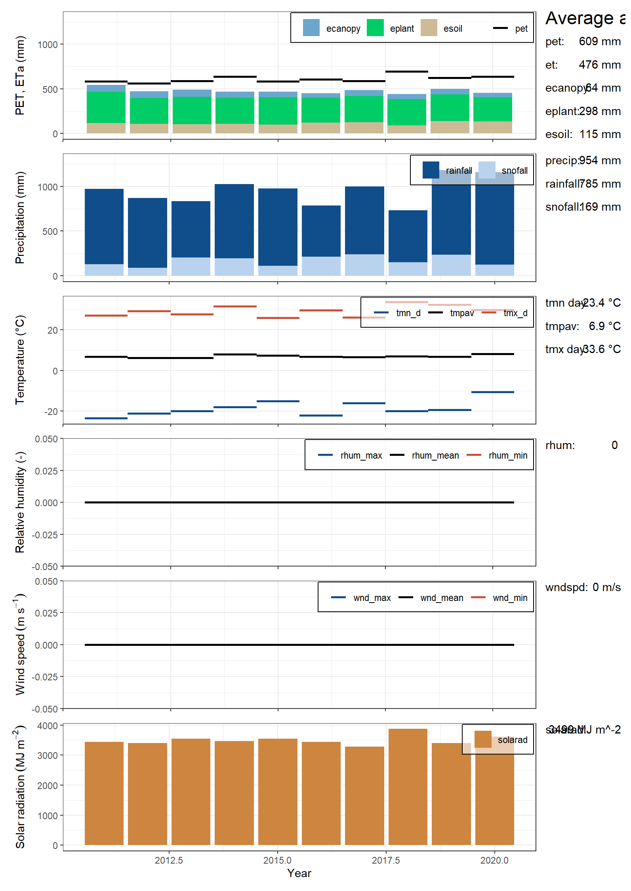
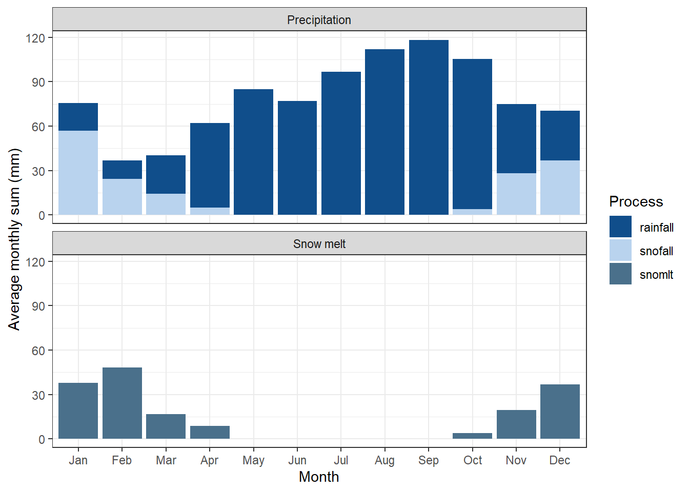

Section 11 Model Verification
11.1 Preparation
Loading required packages, defining paths, and loading objects.
# Install/Update SWATdoctR if needed:
# remotes::install_git('https://git.ufz.de/schuerz/swatdoctr', force = FALSE)
require(SWATdoctR)11.2 Stage 1: Analysis of simulated climate variables
Modified from the Protocol:
- The climate variables daily precipitation and daily minimum/maximum temperatures are required inputs of a SWAT+ model setup (more info: protocol section 2.4).
We have these present.
- Further climate inputs such as solar radiation, relative humidity and wind speed are optional input variables and can be essential for the calculation of the potential evapotranspiration (PET).
We have these, see issue #42 (link)
- Climate inputs are grouped to weather stations in a model setup and
are assigned to spatial objects (HRUs, channels, reservoirs, etc.)
with the
nearest neighbormethod.
We only have 1 weather station so this is not of great relevance.
- The input of weather data and the assignment of climate variables to spatial objects can be sources for several issues which must be analysed:
Data structure of the climate input tables, units of the climate variable, no data flag, etc. was wrong and can result in unrealistically small or large values of the climate variables in the simulation.
Does not seem to be the case in our data
The nearest neighbor assignment allocates weather stations to spatial objects where the weather records do not represent the actual weather conditions in a spatial object well. This can for example be an issue in complex terrain.
Should not be a concern for us (for now) since we only have a single met station
The selected method for the calculation of PET results in an under/overestimation of PET when compared to estimates of PET for the region. In such cases other methods for the simulation of PET which are included in SWAT+ should be tested if they better fit the regional conditions and available weather inputs (see more Additional settings).
See issue #39
Large implausibilities in the weather inputs can be identified in analyses of annual basin averages of the simulated climate variables. Simulated annual and average values of climate variables must be comparable to observation data and/or region specific literature values. Any larger deviations of precipitation can indicate errors in the input file or an inappropriate assignment of weather stations to spatial units.
Have not checked this yet (!!!)
If the lapse rate option is active (Read more in Additional settings), it may be another potential reason for deviations from observations.
We are tracking this topic in issue #39 (link).
11.2.2 Lapse rate off:
# TODO, fix #43 firstOver or underestimated PET can indicate errors in the temperature input files (and if provided in the solar radiation, relative humidity and wind speed inputs).
We are tracking this topic in issue #39 (link).
SWATdoctRprovides the functionplot_climate_annual()to analyse the annual simulated basin averages of climate variables.
fig1 <- SWATdoctR::plot_climate_annual(veri_no_stress)
plot(fig1)
- The first panel shows ET fractions. Current version of SWAT+ often has implausible ET fractions!
Are these values plausible?
ANSWER: Are they Csilla?
- The second panel shows the precipitation fractions rainfall
(
rainfall) and snowfall (snofall).
Are these values plausible?
ANSWER: resolved in issue #43 (link) – but are they plausible Csilla?
- The third panel shows the annual temperature values.
Are these values plausible?
ANSWER: YES Csilla do you agree?
- The fourth panel shows the relative humidity values.
Are these values plausible?
ANSWER: resolved in issue #42 (link), but are they plausible? Csilla
- The fifth panel shows wind speed.
Are these values plausible?
ANSWER: resolved in #42, Csilla plausible?
- The sixth panel shows the annual sums of solar radiation. A comparison to literature values of annual solar radiation sums for the region can indicate issues in this input.
Are these values plausible?
ANSWER: Yes, values for the Oslo area seem to be around 4000 MJ – Csilla do you agree?
- The analysis of mean monthly precipitation (output variable
precip), snowfall (output variablesnofall) and snow melt (output variablesnomlt) sums and their comparison with region specific information (or in the best case observations) provides insight in seasonal dynamics of the precipitation input. Particularly in snow impacted catchments a first verification of snowfall is valuable to see whether precipitation in solid form is simulated, a snow storage can build up and cause increased spring runoff through snow melt. The hydrological cycle of some catchments may be dominated by spring flood events which must be reflected by the simulated processes. Any observed implausibility in such analysis can indicate issues in the weather inputs or require to pay attention in the calibration of model parameters which control the simulation of snow processes (snofall_tmp,snomelt_tmp,snomelt_lag).
CS10, a Boreal catchment, is impacted by snow melt – this is relevant to the verification
SWATdoctR::plot_monthly_snow(sim_verify = veri_no_stress)
This has been resolved in issue #43. (link). Are these values plausible csilla?
- In situations where not all required climate inputs are available which are necessary to estimate PET with PM method the estimates will be more uncertain and annual PET sums may differ to regional values. Then the use of a simpler method for the calculation of PET can be a valid solution.
We do not need a simpler method since we have the required data
STATUS: Waiting on climate verification before continuing to the next step:
11.3 Stage 2: Simulation of management operations
For this, we need a SWAT+ run with management outputs
veri_mgt <-
run_swat_verification(
project_path = "model_data/cs10_setup/run_swat",
keep_folder = T,
outputs = "mgt"
)
saveRDS(veri_mgt, "model_data/swat_doctR/verification_runs/veri_mgt.rds")veri_mgt <- readRDS("model_data/swat_doctR/verification_runs/veri_mgt.rds")
mgt_report <- report_mgt(veri_mgt, write_report = TRUE)## Management OK! No differences between scheduled and triggered managments identified.Seems like there are no issues.
print_triggered_mgt(sim_verify = veri_mgt, hru_id = 92)## Triggered managament for
## hru: 92
## management: a_007f_1_drn_mgt_92_1## # A tibble: 37 × 7
## year mon day phuplant operation op_data1 op_data3
## <dbl> <dbl> <dbl> <dbl> <chr> <chr> <dbl>
## 1 2016 5 12 0 TILLAGE harrow 0
## 2 2016 5 15 0 FERT elem_n 96
## 3 2016 5 15 0 FERT elem_p 0
## 4 2016 5 15 0 PLANT oats 0
## 5 2016 5 17 0.0200 TILLAGE rowcult 0
## 6 2016 6 20 0.520 FERT elem_n 38
## 7 2016 6 20 0.520 FERT elem_p 0
## 8 2016 8 8 1.32 HARVEST oats 0
## 9 2016 8 8 0 KILL oats 0
## 10 2016 10 8 0 PLANT wwht 0
## # ℹ 27 more rowsSooo hows it looking?
test <- get_hru_id_by_attribute(veri_mgt, mgt = "a_001f_1_drn_mgt_1731_1")
print_triggered_mgt(sim_verify = veri_mgt, hru_id = test$id[1])## Triggered managament for
## hru: 1731
## management: a_001f_1_drn_mgt_1731_1## # A tibble: 40 × 7
## year mon day phuplant operation op_data1 op_data3
## <dbl> <dbl> <dbl> <dbl> <chr> <chr> <dbl>
## 1 2016 4 18 0.134 FERT elem_n 79.1
## 2 2016 4 18 0.134 FERT elem_p 0
## 3 2016 5 13 0.250 FERT elem_n 77.2
## 4 2016 5 13 0.250 FERT elem_p 0
## 5 2016 6 17 0.541 FERT elem_n 34
## 6 2016 6 17 0.541 FERT elem_p 0
## 7 2016 8 6 1.03 HARVEST wwht 0
## 8 2016 8 6 0 KILL wwht 0
## 9 2016 8 25 0 PLANT wwht 0
## 10 2016 8 26 0.0102 TILLAGE rowcult 0
## # ℹ 30 more rowsYou tell me!